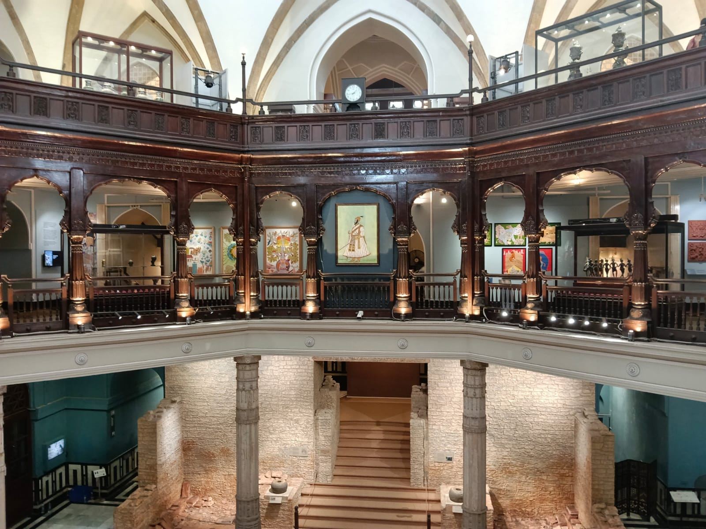
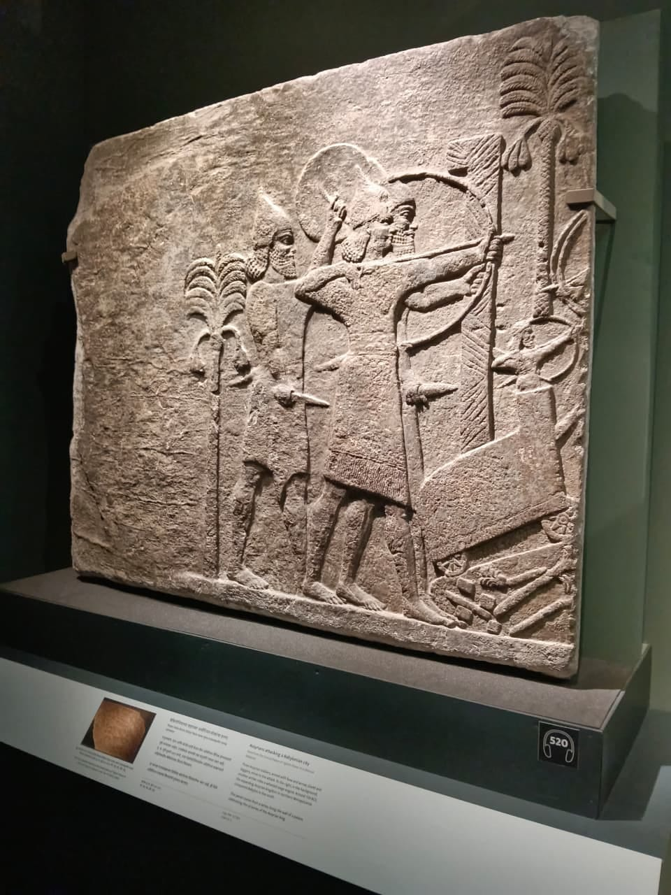
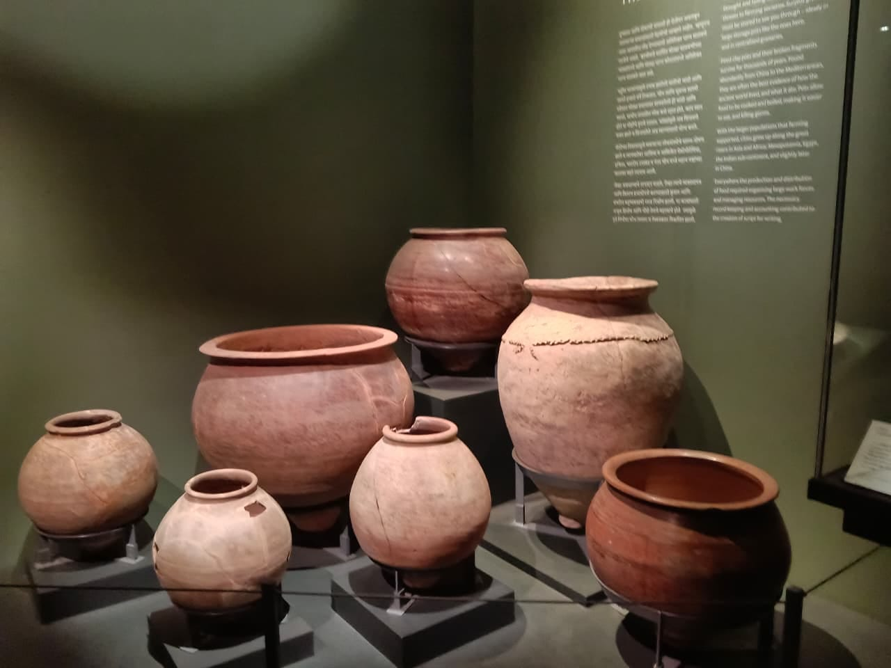

STYLE
Indo-Saracenic
The building combines Indo-Saracenic architectural ideas with elements inspired by traditional Indian design.

HERITAGE / 03
A space where art, history and culture are preserved for generations.
SCROLL TO EXPLORE
01 / A HOUSE OF HERITAGE
The Chhatrapati Shivaji Maharaj Vastu Sangrahalaya, commonly known as CSMVS, is one of Mumbai's important cultural institutions.
Its collections bring together objects representing India's art, history and cultural traditions, allowing visitors to explore the country's rich heritage.
02 / ARCHITECTURE
STYLE
The building combines Indo-Saracenic architectural ideas with elements inspired by traditional Indian design.
FEATURE
A prominent central dome forms one of the building's most recognisable architectural features.
DESIGN
Arches, balconies, stonework and ornamental details give the museum its distinctive character.
03 / HISTORY
CSMVS has developed from an early twentieth-century museum into an important centre for preserving and sharing India's cultural heritage.
1905
The foundation stone of the museum was laid in 1905, marking the beginning of an important cultural institution in Mumbai.
1922
The museum opened its doors to the public in 1922 and began its role in preserving and presenting collections.
2010
The institution was renamed the Chhatrapati Shivaji Maharaj Vastu Sangrahalaya, reflecting its Indian cultural identity.
A CULTURAL MILESTONE
After years of planning and construction, the museum opened its doors to the public in 1922, beginning its long journey of preserving and sharing India's heritage.
05 / VISUAL RECORD



CONTINUE EXPLORING
← BACK TO HERITAGE